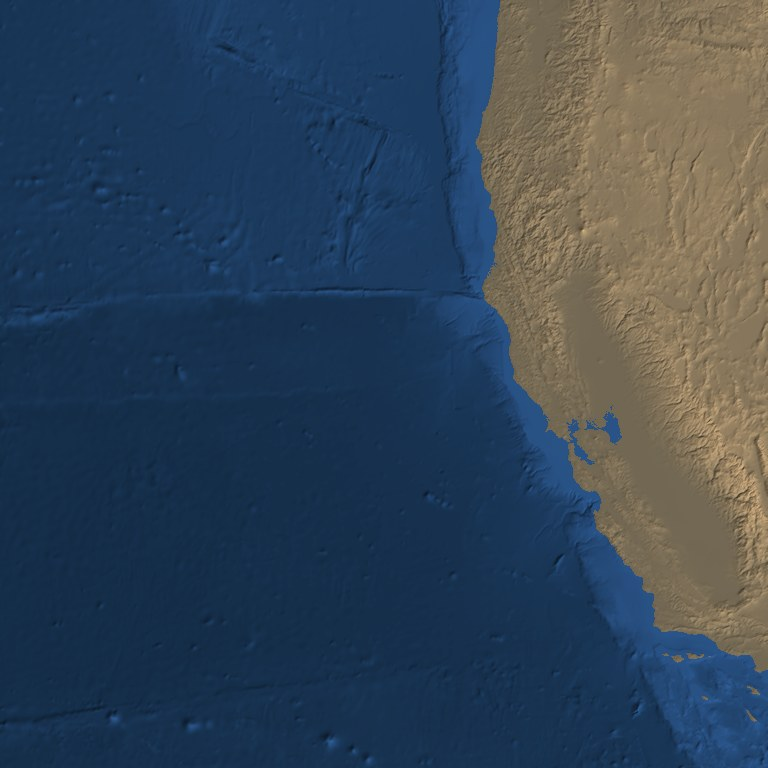
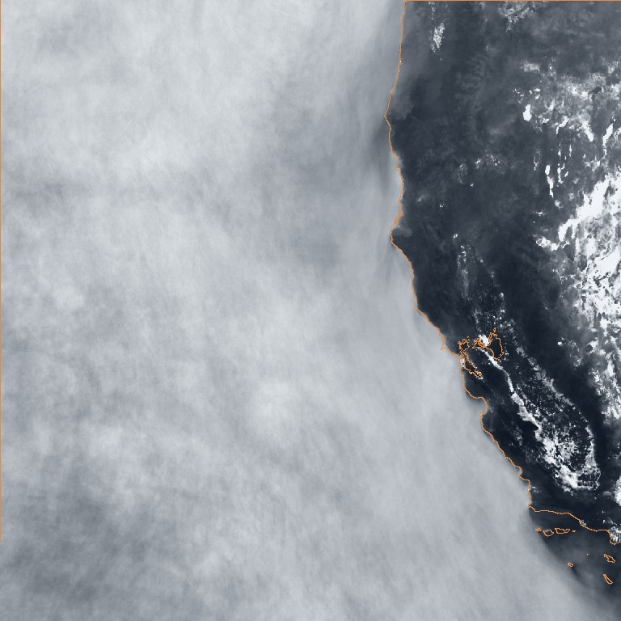

The California deck
About forty days of the marine stratocumulus off California, every ten minutes, day and night, the whole record NASA still holds.
The deck is the most persistent large cloud feature in the northern hemisphere summer: it forms over cold upwelling water, burns back from the coast each afternoon and rolls in again at night. This page is for looking at it, and for working out what a month of it is worth to a model that learns how skies change.
Watch a day
Pick a day. GeoColor clips run through local daylight; infrared clips run the full 24 hours, because infrared looks the same at night. The noon flipbook shows one frame per day at local solar noon — the day-to-day change with the daily cycle held still.
The month at a glance
Rows are days, columns are local solar hours; the last column is 01:00, night. Read down a column to see the day-to-day weather; read across a row to see a single day burn off and return. Empty cells are frames the archive does not have. Scroll inside the frame.
How long a sky remembers itself
Correlation between frames separated by a lag, after removing everything fixed in place — the coastline, and, for infrared, the daily heating of the land. What remains is weather. The control is the same clock time on different days.
Weather memory here lasts about a quarter of a day. Ten minutes apart, frames are 86–96% the same picture. Infrared falls to 1/e of that at 6 h, and is essentially gone by two to three days. So a month holds roughly two genuinely independent skies a day — sixty to eighty — not the 5,760 frames the file count suggests. The frames are not wasted: every consecutive pair still shows how the clouds moved. But they show seventy-odd situations moving, not five thousand. (The full clean month; the first estimate, from a partial fetch, read 12 h and about thirty.)
Where the clouds sit
Elevation and seafloor depth on exactly the same pixel grid as the frames, next to how often each pixel was cloudy at midday.


| distance from the coast | cloudy at midday |
|---|
A fixed map of where cloud usually is explains 23.9% of all the variation in cloud cover. The deck thickens with distance offshore and burns off over land, which is the physics you would expect. The consequence for adding terrain as an input is narrower than it looks: a model trained on this one place learns that quarter from position alone, without being told the terrain. Elevation earns its place as a channel when one model is trained across many places and has to know which is sea.
What else could go in
Infrared temperature
Band 13, cloud-top temperature, same grid and cadence as GeoColor, day and night. The obvious second channel, and the only one that removes the night gap — but it sees only about 71% of the deck: the low cloud sits within a few degrees of the sea, and 28.7% of visibly cloudy pixels are indistinguishable from clear ocean in infrared.
Terrain and seafloor
Fetched for California. Worth a quarter of the cloud-cover signal at one place, and more across places. Static, so it costs one download per place.
Sea surface temperature
The deck exists because the water is cold. Daily SST is on GIBS. It changes slowly, so it would condition the season rather than the hour. Not fetched.
Air Mass
Fetched for the comparison clips and dropped: a static no-data mask covers the southern third of every scene here.
How much data a temporal model needs
Reasoned from the memory measurement above, not measured on a trained model. It depends on the kind of model.
| approach | learns from | rough need | where it comes from |
|---|---|---|---|
| a time direction inside the existing network | consecutive pairs | thousands of pairs, a few hundred situations | this month × ~10 places, free, now |
| a next-frame model conditioned on the last few | short sequences | ~1,000 independent days | about 3 years at one place |
| a full video generator | whole sequences | several thousand sequences | the 2017-to-now NOAA archive |
The first row is cheap and available tonight, and it inherits the 7.72 network's image quality. It has one untested dependency that decides whether it works at all: inversion — whether a real satellite frame can be mapped back into the network's latent space faithfully enough that the difference between two frames ten minutes apart is weather rather than reconstruction error. That is worth measuring on a few dozen frames, for about a euro of GPU, before fetching anything more. GIBS keeps only about forty days, so the other nine places should be pulled soon if that test passes; the longer rows need the NOAA archive, which is radiance data rather than pictures and a real engineering step.